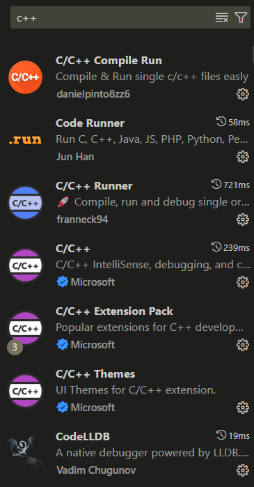

Windows系统在VSCode中配置C/C++环境(直接编译运行和CMake编译运行)
由于VSCode对C/C++的支持性较差，或者是C/C++本身的编译特性所致，导致在VSCode中配置C/C++环境并不像Python那么简便，因此本文将记录一下我配置的过程。
安装MinGW-W64
首先，我们需要安装MinGW-W64，这是Windows下GCC的编译器，用来编译C/C++代码。
VSCode推荐的GitHub下载地址：https://github.com/msys2/msys2-installer/releases
注意
MSYS2 需要 64 位 Windows 8.1 及以上版本。
选择Assets中的msys2-x86_64-xxxxxxxx.exe下载安装（其中xxxxxxxx为版本日期）。
安装完成后默认勾选立即运行MSYS2，单击完成。
当按下完成之后，会弹出打开一个 MSYS2 终端窗口。
在此终端中，通过输入以下命令并按回车键，安装 MinGW-w64 工具链：
| Bash | |
|---|---|
当系统提示是否继续安装时，请输入 Y并回车。
之后就进入安装过程，稍等片刻。
接着在终端中输入运行以下命令：
| Bash | |
|---|---|
以安装CMake。
当所有的包都安装好后，即可关闭终端。
配置环境变量
打开安装msys64所在的文件夹，打开bin文件夹，在地址栏复制地址，然后将该地址添加到系统环境变量中。
打开PowerShell/CMD，分别（逐行）输入运行以下命令：
如果没有报错且输出版本信息，则说明C/C++编译环境已经配置成功。
在VSCode中安装C/C++扩展
在VSCode扩展中搜索并安装以下这些插件。

用g++编译器直接编译运行（适用于文件较少的简单工程）
新建文件夹后创建一个C++文件，例如test.cpp，内容如下：
| C++ | |
|---|---|
在终端中运行：
| PowerShell | |
|---|---|
就会在当前目录下编译生成test.exe可执行文件。
运行exe文件：
| PowerShell | |
|---|---|
更多内容参考： https://blog.csdn.net/m0_47406832/article/details/133798293
使用CMake工具编译运行（适用于文件结构复杂的工程）
还是上面的测试项目，在根目录下创建一个CMakeLists.txt文件，内容如下：
| CMake | |
|---|---|
接下来打开PowerShell（在VSCode中打开可能因为无管理员权限无法运行cmake命令，可以换成外部终端），运行以下命令：
其中 cmake ..是生成构建文件，ninja是编译和构建，将输出 test.exe可执行文件。
运行exe文件：
| PowerShell | |
|---|---|
也可以使用下面的命令删除生成的可执行文件：
| PowerShell | |
|---|---|
更多内容参考： https://www.runoob.com/cmake/cmake-tutorial.html
.vscode文件夹中的配置
c_cpp_properties.json
| JSON | |
|---|---|